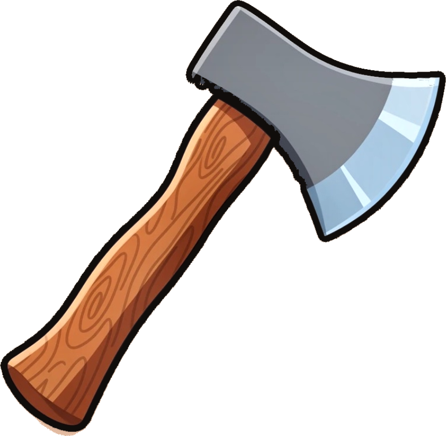

Lumbar Jack
Your posture isn't going to fix itself.
Lumbar Jack lives in your menu bar and quietly reminds you to move, stand, and stretch throughout the workday.
Pay once. No ads. No tracking. No nonsense.


Why Lumbar Jack
Small app. Serious back-up.
No dashboards, no streaks to maintain, no guilt. Just well-timed nudges that keep you moving.
Two modes, one app
Sit/Stand mode for standing desks, Move mode for everyone else. Switch anytime.
Smart reminders
Notifications with snooze and confirm actions. No app-opening required.
Daily exercises
Curated posture exercises grouped by body area, with set tracking and a morning nudge.
Stays out of your way
Nudges that never break your flow.
Reminders arrive as native macOS notifications. Confirm you're standing, snooze for ten, or push to the next half-hour — all without leaving what you're doing.
- ✓Confirm or snooze straight from the banner
- ✓Quiet by design — no sounds unless you want them
- ✓Lives in the menu bar, never in your Dock

How it works
Set it once. Sit better forever.
Install it
Lumbar Jack lives in your menu bar — invisible until you need it.
Pick your mode
Sit/Stand or Move. Set your intervals and choose your exercises.
Keep working
Well-timed nudges arrive as notifications. Confirm and carry on.
Zero data collection. Zero network access.
Lumbar Jack is fully sandboxed and runs entirely on your Mac. Your data never leaves your device because there's nothing to send.
Read the full privacy policyReady to sit up straighter?
Pay once. No subscriptions, no ads, no tracking — just better posture.